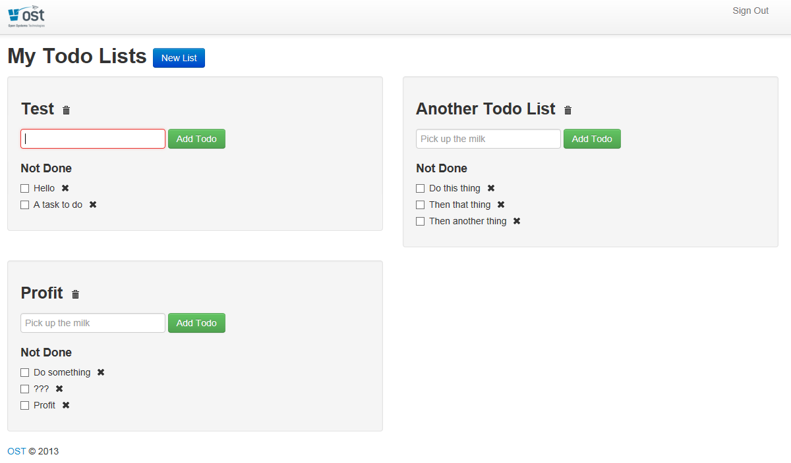
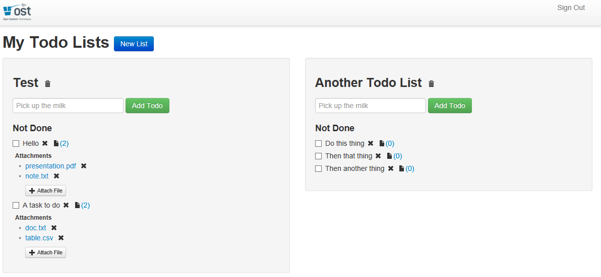
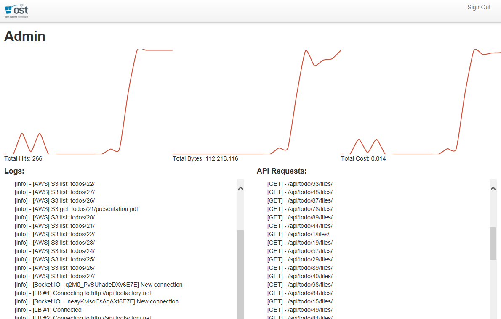
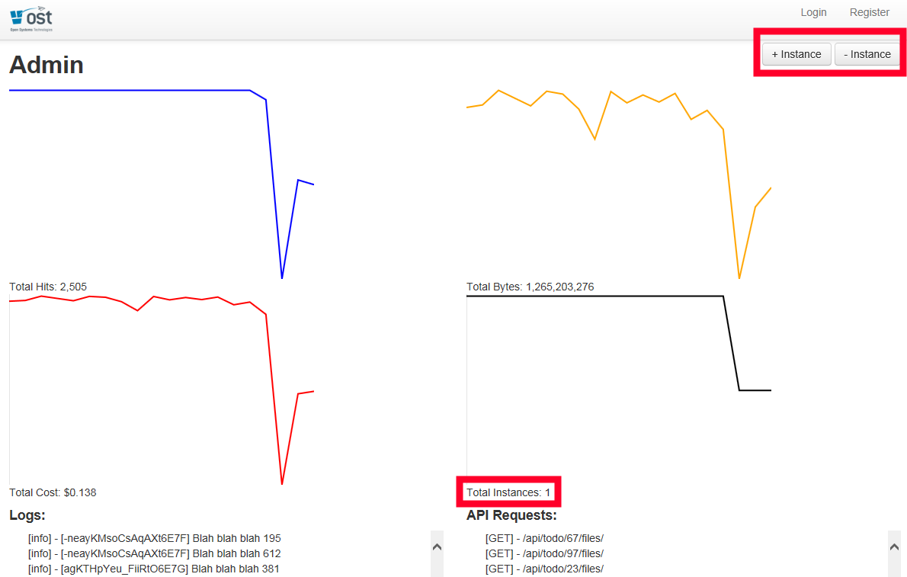

The Happy Path
Migration Strategies for Node.js
Introduction
- OST Todos and NDriven
- What is Node.js?
- What is the most popular stack for building web based Node.js apps?
- Why are large companies adopting it?
- Why do we care? Why should you care?
- Show me
OST Todos
We are going to use this app for our migrations demos.
It is a reference sample application that we built and released open source last year at GLSEC.
Available on Github: https://github.com/OSTUSA/ost-todos
NDriven
A baseline for domain driven .NET applications using an Onion Architecture.

Available on Github: https://github.com/OSTUSA/ndriven
At OST, we leverage NDriven as the base of our projects constantly. We also used it on our recent upgrade of PayItSquare.com.
What is Node.js?
Node.js is a software platform for scalable server-side and networking applications. Node.js applications are written in JavaScript, and can be run within the Node.js runtime on Windows, Mac OS X and Linux with no changes.
Technical Details
- Node.js runs JavaScript, using Google's V8 runtime (C++).
- Node.js is event-driven, asynchronous, single threaded and non-blocking, which makes it able to scale more efficiently than thread-per-connection models (eg. ASP).
- Node.js = base .Net Framework and runtime
- Modules = libraries like .Net namespace assemblies
- NPM = package manager like Nuget
Most popular stack for web apps?
MEAN
- MongoDB - Document-based database server
- Express - Web framework for Node.js
- Angular - JavaScript MVW framework
- Node.js - Server side JavaScript
Enterprise Process Ready
- Grunt, Gulp = build tool (MSBuild)
- Jenkins, Strider = continuous integration (TeamCity, Bamboo or Cruise Control still work)
- NodeUnit, Jasmine, Mocha, Vows = unit testing (nUnit)
- Bower = front end package manager by Twitter
Major Companies are adopting these technologies
PayPal
" We are moving every product & every site within PayPal to Node. We started the journey by using it as prototyping framework... by end of 2014 we hope to have all major experiences redesigned, and rewritten on Node.
We are seeing big scale gains, performance boosts and big developer productivity."
- Built almost twice as fast with fewer people
- 33% fewer lines of code
- 40% less files
Bill Scott - http://www.quora.com/Node-js/What-companies-are-using-Node-js-in-production
Dow Jones
"The simple truth is Node has reinvented the way we create websites. Developers build critical functionality in days, not weeks."
Michael Yormark
WSJD Product Operations
More examples here: http://nodejs.org/industry/
More Examples
Why should you care?
- Less training, less code: One language on the client and server.
- Less abstraction: simplifies layers and removes need for ORM if you think NoSQL.
- Faster prototyping and bootstrapping.
- Modern and makes you think in terms of modern web apps.
- A large community with a lot of active development. These technologies seem to be beloved by developers.
Show me
Take it over Nic and Jason
The Scenario
- You are a full-stack developer working at the FooFactory.
- The FooFactory has an internal task management system based off OST Todos (ASP.NET MVC 4, AngularJS, ndriven).
- Your boss, BossFoo, is interested in rapidly prototyping new features for the task management system as it is becoming an integral part of the FooFactory's daily operations.
- BossFoo has read about Node.js and is interested in possibly using it to speed up and unify FooFactory's web development stacks.
OST Todos Demo
BossFoo's Requirements
BossFoo wants you to add the following features to the Todos application:
- A document storage and retrieval system where users can attach documents to their tasks.
- An admin interface that can monitor the system in real-time to show its load and operational costs.
Your Constraints
However, you are constrained by the following criteria:
- BossFoo is under a time and budget crunch to get these features implemented and would prefer to see a prototype of how it will work before he invests in big hardware to run it full time.
- There is no short-term budget for dedicated hardware or storage until it has been proven to work, so an on-demand infrastructure-as-a-service (IaaS) should be used.
- The prototype has to integrate seamlessly into the existing Todos application.
The Path to Node.js
You carefully consider what you will need to prototype the new features:
- A document storage system that will scale gracefully as usage increases.
- A new API that allows for document listing, creation, retrieval and deletion.
- An update to the Todos AngularJS application that will integrate with the new API.
Document Storage
Since you have no hardware budget, you choose to use Amazon S3, a cloud-based file system that scales seamlessly.
API - The Contenders
There are at least two stacks you could use to build the API:
- C# / ASP.net MVC: Extend the existing MVC app, add data models, build a new API, update all the layers of the onion, integrate with S3, update the AngularJS UI.
- Node.js: Add a new Node.js API server, have it integrate with S3, update the AngularJS UI.
And the winner is... Node.js
- Node.js is great for prototyping since there is no build process, JavaScript is a dynamic language, server and client code look the same, etc.
- Amazon S3 introduces a high latency link. Node.js is non-blocking so it can scale better.
- Node.js and Socket.IO make it easy to build real-time applications.
Phase 1: Building the API
Goal: Create a Node.js API server that interacts with Amazon S3, and update the AngularJS UI to associate documents with tasks
Phase 1: Steps
- Get up and running with Node...
-
Bootstrap an express project:
> express node-server - Add a few simple REST routes for document creating, listing, retrieval and removal.
-
Integrate with Amazon's SDK for JavaScript:
> npm install aws-sdk - Update the AngularJS application to point to the Node.js API server.
- Hook your new node server into IIS server using iisnode.
Phase 1: REST API
We want to create the following REST API routes:
GET /api/todo/:id/files
Get all of the file names for a todoGET /api/todo/:id/file/:name
Get a specific fileDELETE /api/todo/:id/file/:name
Delete a specific filePOST /api/todo/:id/files
Upload (overwrite) a file
Phase 1: Code
// imports
var http = require('http'), fs = require('fs'),
express = require('express'), AWS = require('aws-sdk');
// configure AWS
AWS.config.loadFromPath('./aws.json');
var s3 = new AWS.S3();
// startup the HTTP server
app = express();
var httpServer = http.createServer(app);
httpServer.listen(80);
// one of the routes
app.get('/api/todo/:id/files/:name', function(req, res) {
s3.getObject({
Bucket: 'glsec-2014',
Key: 'todos/' + req.params.id + '/' + req.params.name + '.txt'
}, function(err, data) {
if (err || !data) { return res.send(500, err); }
var buff = new Buffer(data.Body, "binary");
res.send(buff);
});
});
This is a simplified (but runnable) version of the code.
Phase 1: Demo
Phase 2: Building the Admin Interface
Goal: Create an Admin interface so the system can be monitored in real-time.
Phase 2: Steps
Phase 2: Code
Server
// ... continued from Phase 1 server code ...
var socketIo = require('socket.io');
var sockets = [];
io = socketIo.listen(httpServer);
io.sockets.on('connection', function(socket) {
sockets.push(socket);
socket.emit('log', { msg: 'Hello' });
});
Client
<script src="socket.io.js"></script>
<script>
// ... AngularJS client code ...
var socket = io.connect('http://api.foofactory.net');
socket.on('log', function (data) {
// log message
});
</script>
This is a simplified (but runnable) version of the code.
Phase 2: Demo
Phase 3: Scaling
Goal: Allow the system to be easily scaled by Admins.
Phase 3: Steps
- Add buttons for Admins to increase or decrease the number of Node.js API server instances (enterprise or cloud).
- Add a new controller that will manage internal VMs, Amazon EC2 or Azure Node.js load-balanced instances.
- Allow Admins to monitor the number of instances.
- Have all Node.js API server instances communicate with the master server, sending stats, logs and API hits in real-time.
For this phase, we created mock instances that pretend to see user activity.
Phase 3: Code
Load-Balanced Instances
// workerInstance.js: Server instances also connect
// to master API server via Socket.IO
var socketIoClient = require('socket.io-client');
var io = socketIoClient.connect('http://api.foofactory.net');
client.on('connect', function() {
client.emit('log', { msg: 'I connected' });
});
Master Server
// ... continued from Phase 2 server code ...
// collect log events from other server instances
socket.on('log', function(data) {
// repeat log to all Admin clients
for (var i = 0; i < sockets.length; i++) {
sockets[i].emit('log', data);
}
});
This is a simplified version of the code.
Phase 3: Demo
Phase 4: Rewriting the ASP.net MVC API
Goal: For comparison, migrate all of the existing ASP.net MVC API to Node.js.
Phase 4: Steps
- Create a new REST API in the Node.js server that mimics the ASP.NET MVC REST API.
- Simplify by using a NoSQL solution such as MongoDB for todo storage.
Phase 4: REST API
Leave the client alone. Migrate the following REST APIs to Node.js:
GET /api/todolist/:id/todos: Get todos for a listPOST /api/todolist/:id/todos: Post a todo to a listGET /api/todolists: Get all of the todos for the userGET /api/todolist/:id: Get a specific todolistDELETE /api/todolist/:id: Deletes a specific todolistPOST /api/todolist: Creates a todolist
Phase 4: Code: Data Model
// todolist.js
var mongoose = require('mongoose');
var todoSchema = mongoose.Schema({
Title: String,
Completed: Boolean
});
var todoListSchema = mongoose.Schema({
Name: String,
OwnerId: String,
Todos: [todoSchema]
});
// CommonJS exports
exports.Todo = mongoose.model('Todo', todoSchema);
exports.TodoList = mongoose.model('TodoList', todoListSchema);
This is a simplified version of the code.
Phase 4: Code: Controller
var TodoList = require('./todolist').TodoList;
app.get('/api/todolists', function(req, res) {
var userId = req.get('userId');
// MongoDB / Mongoose ORM
TodoList.find({ OwnerId: userId }, function(err, lists) {
if (err) { return res.send(500, err); }
if (!lists) { return res.send(404); }
return res.send(lists);
});
});
Phase 4: Code: Client
Before
angular.module("todos.services", ['ngResource']).
factory("TodoList", ['$resource', function ($resource) {
return $resource('/api/todolists/:id', { id: '@Id' });
}]).
}]).
angular.module("todos.services", ['ngResource']).
factory("TodoList", ['$resource', function ($resource) {
return $resource('http://api.foofactory.net/api/todolists/:id', { id: '@Id' });
}]).
}]).
Phase 4: Demo
This should look the same as Phase 2, now powered by Node.js!
Migration Strategies
- Start small: Consider implementing a small new feature in Node.js before you decide what parts of your architecture make sense to use Node.js.
- Learn to love prototyping: Node is great for quickly experimenting on new features. Prototype first before engineering a fully-baked solution.
- Hook Node.js into IIS: Consider using iisnode to easily hook Node.js into your IIS server instead of adding a separate Node.js server.
- Use it alongside your existing apps: Give it a try
Closing
Links: